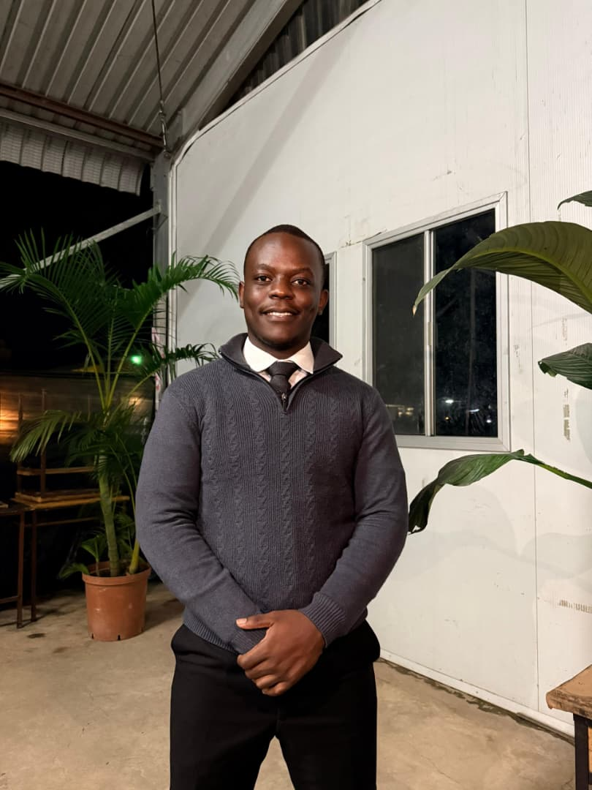

Who I Am
About Me
Hi, I'm Fidelis Musonda, a Year 3 Computer Science student at Copperbelt University with a deep passion for building software that solves real problems. I thrive at the intersection of clean code, elegant design, and systems that actually work.
When I'm not debugging or architecting solutions, I enjoy exploring the broader landscape of technology — from low-level systems to AI-driven applications. I believe curiosity and consistency are the two most powerful tools any developer can have.
Interests & Hobbies
- Open-source software development
- UI/UX design and front-end engineering
- Reading tech blogs and research papers
- Playing chess and solving logic puzzles
- Photography and digital storytelling
Top Academic Courses
- Data Structures & Algorithms
- Web Technologies (CS361)
- Operating Systems